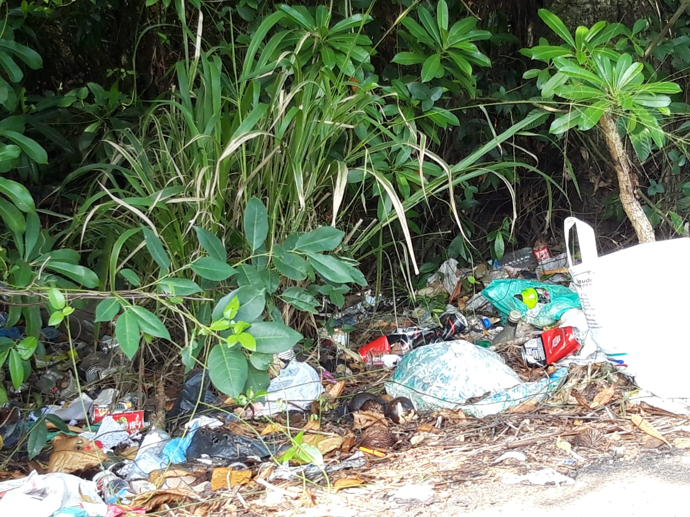

Welcome to our interactive carbon footprint calculator,
where you can uncover the environmental impact of your daily lifestyle choices.
But first, let's understand what a carbon footprint is and why it matters.
Explanation
Your carbon footprint represents the total amount of greenhouse gases,
primarily carbon dioxide, released into the atmosphere as a result of your activities.
These activities include transportation,energy consumption, diet, and other everyday habits.
Essentially, it measures your contribution to climate change.
Importance
Understanding your carbon footprint is crucial because it allows you to assess
the environmental impact of your actions and make informed decisions to reduce it.
By identifying areas where you can minimize emissions, such as reducing energy usage,
choosing sustainable transportation options, and adopting eco-friendly practices,
you can play a significant role in mitigating climate change.
Interactive Carbon Footprint Calculator
My Web Page
Interactive Carbon Footprint Calculator

Sources of Carbon Emissions
In Energy Consumption
Electricity: Electricity generation often relies on burning fossil fuels like coal,
natural gas, and oil, releasing carbon dioxide (CO2) and other greenhouse gases into the atmosphere.
Heating: Heating homes, buildings, and industrial processes typically involves burning fossil
fuels or using electricity generated from fossil fuels.
Transportation
Road Transportation: Cars, trucks, and buses powered by gasoline or diesel engines emit CO2 and other pollutants.
Air Transportation: Airplanes burning jet fuel emit large amounts of CO2 and other greenhouse gases.
Maritime and Rail Transportation: Ships and trains also emit CO2 and other pollutants, primarily
from burning diesel fuel.
Industrial Processes and Manufacturing
Various industries, such as cement, steel, chemicals, and refining, rely on energy-intensive processes
that emit significant amounts of CO2.
Agriculture and Land Use Changes
Livestock: Ruminant animals like cattle produce methane (CH4) during digestion, a potent greenhouse gas.
Additionally, manure management and fertilizer use in agriculture can release methane and
nitrous oxide (N2O), another potent greenhouse gas.
Deforestation and Land Use Change: Clearing forests for agriculture, urbanization, and other purposes releases
carbon stored in trees and soil into the atmosphere.
Waste Management and Disposal
Wastewater Treatment: Wastewater treatment processes can produce methane and nitrous oxide emissions.
Carbon footprint impacts on living things
High carbon footprints lead to more greenhouse gases like carbon dioxide in the air, which can worsen
air quality and cause respiratory problems in humans and animals.
Excess carbon dioxide in the atmosphere traps heat, causing global temperatures to rise. This disrupts ecosystems,
alters weather patterns, and threatens the habitats of many species.
When carbon dioxide is absorbed by the ocean, it forms carbonic acid, which makes the water more acidic.
This harms marine life, especially creatures with shells or skeletons made of calcium carbonate, like corals and shellfish.
Climate change can lead to the loss of habitats due to factors like rising temperatures, changes in precipitation patterns,
and sea level rise. This can endanger species and disrupt entire ecosystems.
Climate change can affect agriculture and food production, leading to food shortages and increased prices.
This can threaten the livelihoods of farmers and food security for communities around the world.
Climate change can increase the frequency and intensity of extreme weather events like hurricanes,
droughts, floods, and wildfires, which can devastate communities and ecosystems.